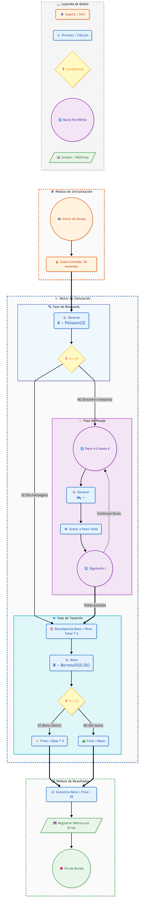

Elaborado por: Laura Isabel Greiffenstein Moreno & Kevin Ferney Hidalgo Higuita
Correos: lgreiffenstein@unal.edu.co & kfhidalgoh@unal.edu.co
Fecha de elaboración: 2026 Marzo 28
Fecha última modificación: 2026 Marzo 28
En esta tarea, los estudiantes tendrán la oportunidad de integrar de manera práctica los conceptos fundamentales de probabilidad, variables aleatorias y simulación, mediante el diseño, análisis e implementación de un juego de azar. La actividad está pensada como un ejercicio técnico, y como una experiencia creativa aplicada, donde cada estudiante (o grupo máximo de dos estudiantes) construirá un sistema aleatorio desde cero, definiendo sus reglas, su lógica de funcionamiento y las variables de interés que permitirán analizar su comportamiento. A lo largo del desarrollo del taller, se espera que comprendan que detrás de cualquier juego de azar existe una estructura probabilística que puede ser modelada, simulada y estudiada rigurosamente. En este sentido, el objetivo no es únicamente “jugar” sino, además, entender, modelar y explicar el fenómeno aleatorio que subyace en el sistema diseñado. Adicionalmente, el uso de herramientas computacionales permitirá observar cómo, a través de la simulación, es posible aproximar distribuciones de probabilidad, estimar medidas estadísticas y analizar estrategias o comportamientos del juego bajo diferentes escenarios. Este ejercicio busca fortalecer cuatro competencias: (i) el pensamiento probabilístico, (ii) la modelación de sistemas aleatorios, (iii) la interpretación de resultados simulados, (iv) y la capacidad de comunicar ideas de forma clara y estructurada. Finalmente, se invita a los estudiantes a asumir este reto con creatividad, rigor y criterio analítico, entendiendo que la simulación no solo es una herramienta académica, sino un instrumento poderoso para la toma de decisiones en contextos reales.
Diseñar un juego de azar que permita simular sus posibles resultados. Deberá dejar en claro el juego con sus reglas y supuestos para que sea entendible para cualquier jugador. Las reglas del juego las deberá acompañar de un ejercicio que le permita simular los resultados en algún paquete de software. Utilice también un diagrama de flujo y opcional un pseudo-código para que pueda elaborar su algoritmo y apoyar la sustentación de este en clase (revise una presentación sobre notas de elaboración de un diagrama de flujo y pseudocódigo que habíamos cargado previamente en MinasLap).
Defina por lo menos una variable aleatoria de interés (pueden ser dos o más) que pueda ser estudiada en el juego, con sus probabilidades, distribución de probabilidad, esperanza, varianza y desviación estándar, y otras medidas de tendencia central y variabilidad que considere pertinente.
Implementar el desarrollo de juego en algún paquete de software acompañado de su diagrama de flujo o pseudocódigo y el proceso simulado en el software, que sea funcional para cuando lo esté presentando.
Objetivo del juego El jugador asume el papel de un arqueólogo financiando una expedición. El objetivo es encontrar reliquias, pesarlas y venderlas al museo para recuperar el costo de la expedición y obtener la mayor ganancia posible.
Mecánica y Reglas Explícitas
Diagrama de flujo

Variables de interés y supuestos estadísticos
Para modelar este sistema de forma rigurosa, definimos tres variables aleatorias principales que controlan la incertidumbre del juego.
Número de reliquias encontradas ($X$):
Modela el número de hallazgos por expedición. Se utiliza distribución Poisson por tratarse de un conteo de eventos aleatorios en un intervalo fijo. El valor $\lambda = 3$ representa el promedio esperado de reliquias y es definido por el diseñador del juego.
Peso de cada reliquia ($W_i$):
Modela el peso de las reliquias, que siempre es positivo. La distribución exponencial permite representar muchos valores pequeños y algunos valores grandes poco frecuentes. La media de 2 kg es una decisión del diseñador para definir un escenario plausible.
Bono del Ídolo de Oro ($B$):
Modela la ocurrencia del bono (1 si ocurre, 0 si no). Se usa Bernoulli por ser un evento de dos resultados posibles. La probabilidad del 5% refleja un evento raro, definido por el diseñador del juego.
En conjunto, las distribuciones y sus parámetros son elecciones del diseñador que permiten representar la incertidumbre del sistema de forma coherente y controlada.
Metodología y contexto
El juego “Excavación en el Valle de los Reyes” fue modelado como un sistema probabilístico con tres fuentes de incertidumbre: el número de reliquias (X∼Poisson(3)), el peso de cada reliquia (Wi∼Exponencial(2)) y la ocurrencia del bono (B∼Bernoulli(0.05)). Estos supuestos corresponden a decisiones del diseñador del juego, quien define el comportamiento del sistema y su nivel de variabilidad.
Debido a la complejidad del modelo, se utilizó simulación Monte Carlo, ejecutando 10,000 iteraciones del juego. Esto permitió estimar empíricamente métricas como la ganancia promedio y la probabilidad de ganar, y validar los resultados teóricos.